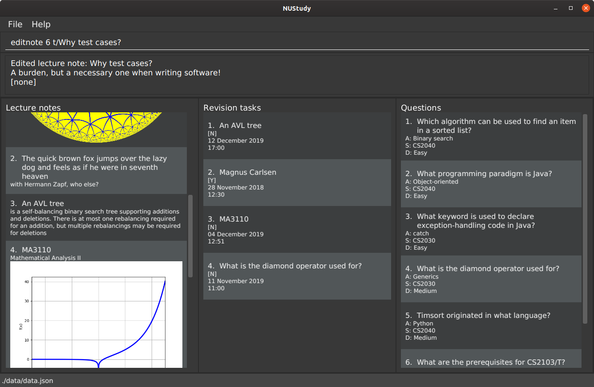

1. Introduction
NUStudy is an application for managing three kinds of informational material: lecture notes, quizzes and revision tasks. Their primary purpose is preparing for exams and tests in universities, but they can also be useful for refreshing memory, particularly after a module has ended (the reliance of some computing modules on prior knowledge is rather heavy).
Most of the work is done through a command line; the GUI merely displays the results. The overall appearance is similar to a simple note-taking client.
2. Quickstart
-
Ensure you have Java 11+ installed.
-
Download the latest
nustudy.jarhere. -
Copy the file to the folder you want to use as the application’s home folder.
-
Double-click the file to start the app (if this does not work, use
java -jar nustudy.jar). The GUI should appear in a few seconds. -
Type the command in the command box and press Enter to execute it. Some commands you can try are
-
listnote: lists all lecture notes -
addnote t/Title c/Content: adds a lecture note with title "Title" and content "Content". -
deletenote 1: deletes the first lecture note -
help: open the help window -
exit: exits the app
-
3. Features
This section helps you navigate through the features and commands.
Command Format
-
Words in
UPPERCASEare parameters you supply e.g. inaddnote t/TITLE,TITLEis a parameter which can be used asaddnote t/TITLE. Parameters can be provided in any order. -
Items in square brackets are optional.
-
Items with
… after them can be used zero or more times.
3.1. Lecture notes
3.1.1. Adding lecture notes: addnote
This is the basic command for getting your lecture notes into NUStudy. The i/ field, if provided, brings up a
dialog where you can choose an image from your computer’s file system; such an image will be displayed at the
bottom of the note.
Format: addnote t/TITLE c/CONTENT [i/]
Suppose you want to remember what the order-7 triangular tiling looks like and its Schläfli symbol.
Type addnote t/Order-7 triangular tiling c/{3,7} i/ into the command line. The file selection dialog
will pop up, and you can select the image from your file system. Once done, you will see the lecture note:

It is fine to back out of the image selection dialog; an image can always be added later using editnote.
Your images are copied into the application’s data folder, so don’t worry about losing them –
you can always take them along. Images resize according to the window, but if an image is small enough that it can fit at its
natural resolution, it is left that way.
3.1.2. Editing lecture notes: editnote
If your lecture notes need updating, use this command, providing arguments t/, c/ and i/ (at least one)
as you would do with addnote, but only those arguments you want to change. Providing i/ brings up the same image
selection dialog like in addnote.
Images can explain a lot, but if you want to remove them, use i/none in your command, and the dialog
will not appear. Otherwise, if you back off from choosing an image (e.g. by clicking the dialog’s
close button), nothing will happen and your images will remain safe and sound.
Multiple notes can share the same image, and you can overwrite existing images currently in NUStudy with new ones sharing the same filename.
The index must be between 1 and the number of lecture notes inclusive. It is listed before the title of each lecture note:

Format: editnote INDEX [t/TITLE] [c/CONTENT] [i/[none]]
3.1.3. Viewing lecture notes: findnote
Of course, what use are virtual lecture notes if you can’t search through them? This command
displays those notes whose titles contain every word (space-separated, ignoring case) you provide
as arguments.
Format: findnote WORD [WORD]…
3.1.4. Listing all lecture notes: listnote
This is like running findnote but with no arguments. It shows all your lecture notes in their unabashed glory.
Format: listnote
3.1.5. Deleting lecture notes: deletenote
When your semester ends, surely you want to free up space on your computer so you can accept new notes
for the coming semester? This command deletes the lecture note with the index you provide.
Format: deletenote INDEX
3.1.6. Clearing all lecture notes: clearnote
Finally, if you ever find a better application than NUStudy for your lecture notes, you can clear
them all. Your quiz questions and revision tasks will not be affected.
Format: clearnote
3.2. Questions
NUStudy can also store different sets of questions and answers; at your command, the system will prompt you to answer those questions.
3.2.1. Adding Questions : addq
You can add a question and its answer together with the necessary fields to the app.
Format: addq q/QUESTION a/ANSWER s/SUBJECT d/DIFFICULTY
Example:
-
addq q/How to represent 85 in binary? a/1010101 s/CS2100 d/medium

The new question will be added to your question bank.

3.2.2. Listing all questions: listq
This command allows you to view the list of all questions.
Format: listq


3.2.3. Editing a question: editq
You can edit the fields of an existing question by providing the fields you want to change.
Format: editq INDEX [q/QUESTION] [a/ANSWER] [d/DIFFICULTY] [s/SUBJECT]
Examples:
-
editq 7 a/16 d/easy

Edits the answer and difficulty of the 2nd question to be 16 and easy respectively.

3.2.4. Locating questions by keyword: findq
This command will give you a list of questions containing the keyword(s) you specified.
Format: findq KEYWORD [MORE KEYWORDS]
Examples:
-
findq UDP

Finds the question whose body contains the keyword UDP.

3.2.5. Deleting a question: deleteq
You can delete a question at its specified INDEX together with its relevant fields from the list.
Format: deleteq INDEX
Example:
-
listq
deleteq 3

Deletes the 2nd question from the question list.

-
findq character
deleteq 1
Deletes the 1st question in the results of findq command.
3.2.6. Filter by difficulty: difficulty
You can view the list of all questions filtered by the specific difficulty.
Format: difficulty DIFFICULTY
Example:
-
difficulty hard
Returns a list of hard questions.

3.2.7. Filter by subject: subject
You can view the list of all questions from a specific subject.
Format: subject SUBJECT
Example:
-
subject CS2103T

Returns a list of questions of CS2103T.


3.3. Quiz mode
There is a built-in quiz mode in NUStudy for you to take a revision quiz. You can indicate the number of questions, subject and difficulty and the quiz will randomly select questions for you according to your requirement. You will answer the question one by one and your result will be given.
3.3.1. Enter quiz mode : quiz
You can enter the quiz mode using this command.
Format: quiz n/NUMBER_OF_QUESTIONS d/DIFFICULTY s/SUBJECT
Example:
Step 1: Types quiz n/2 d/Easy s/CS2040 in the command box and presses Enter to execute the command.
quiz commandStep 2: The result will show the message of successfully entering the quiz mode. The first quiz question will appear
on the third column.

quiz command3.3.2. Answer the quiz question
You can type your answer in the command box to answer the question.
Example:
Step 1: Types your answer in the command box and presses Enter to execute the command
Step 2: The result of your answer will reflect your correctness and the next question will be displayed.
3.3.3. Show an answer : show
You can check the answer for the current quiz question using this command. You can use it as reference and please do
not use it to cheat.
Format: show
Example:
Step 1: Types show in the command box and presses Enter to execute the command.
Step 2: The answer of current question will be displayed.

show command and its result3.3.4. Skip a question : skip
You can skip current question and go to the next one using this command.
Format: skip
Example:
Step 1: Types skip in the command box and presses Enter to execute the command.

skip commandStep 2: The current question is skipped and next question will be displayed.
skip command3.3.5. Exit test mode : quit
You can exit from the quiz mode using this command.
Format: quit
Example:
Step 1: Types quit in the command box and presses Enter to execute the command.
quit commandStep 2: The result shows message of exit from the quiz mode and the original questions will appear.

quit command3.4. Get statistics
You can get statistics of the questions that you have done in the app. The statistics functions listed below are used to filter the type of statistics that you want to get.
| Quiz results stored in the app are not synchronised with the questions. If a question has been modified by the editq command, the stored quiz result will still refer to the original question to minimise inconsistencies in the statistics. This is because a question that has been modified to a large extent might cause past answers to become irrelevant and distort the statistics. |
3.4.1. Get statistics for subjects : stats
Returns a panel containing a break down of the questions by its results.
You can choose to get the statistics for a difficulty level by adding d/ or
get the statistics of different subjects by adding s/.
Typing any other non-statistics command will close this panel.
Format: stats [d/DIFFICULTY] [s/SUBJECT1] [s/SUBJECT2]…
3.4.2. Get questions with correct/incorrect answers: question
Get a panel containing all questions that have been answered correctly/incorrectly by using -c/-i respectively.
Either one of -c or -i must be used. You can also filter by subjects by adding s/.
Typing any other non-statistics command will close this panel.
Format: question [-c] [-i] [s/SUBJECT1] [s/SUBJECT2]…
3.4.3. Get a report for individual questions: report
Returns a panel containing a report of how well you have answered a particular question,
the number of times the question has been attempted and the past answers to the question.
Typing any other non-statistics command will close this panel.
Format: report INDEX
3.4.4. Get overview of questions attempted: overview
Get an overview of the types of questions that have been attempted overall.
A panel containing a stacked bar graph, sorted by subjects will be returned.
You can also add two dt/ fields representing a time period to get questions you did
within that time period. The format for date is dd/MM/yyyy. Typing any other non-statistics
command will close this panel.
Format: overview [dt/START_DATE dt/END_DATE]
3.5. Revision tasks
This section provides instructions to manipulate revision tasks. The revision tasks help you plan your revision of notes and questions.
The diagram below shows how a revision task looks like:
| The revision tasks are not synchronised with the note and the question. Once created, the task content will not change if you modify the corresponding note or question. For example, if you have added a task for note "An AVL Tree" and then you delete the note or change the title of the note, the task still exist with the heading unchanged. We adopt this approach because we would like to allow you to customise the task headings in version v2.0 of the app. Therefore, we disassociate the task from notes and questions once created. |
| Revision tasks with the same heading, same date and same time are considered duplicate tasks and cannot co-exist in the revision task list. Tasks with the same heading, same date, same time, but different status are cannot co-exist because it does not make sense to have same tasks but different status. |
3.5.1. Add a revision task for a note: rn
You can add a revision task for a note to the current revision task list with this command.
The heading will copy the title and the GUI will display all tasks upon completing the command.
An invalid date will be interpreted as the nearest valid date.
Format: rn t/TITLE_OF_NOTE dt/START_DATE tm/START_TIME
Example:
-
Type
rn t/CS2103T UML diagram dt/01/11/2019 tm/0900in the command input box, and pressEnterto execute it
-
The result box will display the message "Revision task added: [N] NOTE : CS2103T UML diagram by: 01 November 2019 09:00". The task is added to the task list shown in the middle panel.

| You need to follow the format "dd/MM/yyyy" for START_DATE input and "HHmm" with 24-hour format for START_TIME input. For example: "31/12/2019" to represent "31st December 2019", "0900" to represent "9am", "1400" to represent "2pm". |
3.5.2. Add a revision task for a question: rq
You can add a revision task for a question to the current revision task list with this command.
The heading will copy the question body.
The GUI will display all tasks upon completing the command.
Format: rq i/INDEX_OF_QUESTION dt/START_DATE tm/START_TIME
Example:
rq i/1 dt/11/11/2019 tm/1500
3.5.3. Remove revision task: rdelete
You can remove a particular revision task from current list with this command.
The GUI will display the current list (all-task, done-task, not-done-task or overdue-task) view.
Format: rdelete INDEX_OF_TASK
Example:
rdelete 2
3.5.4. Mark the revision task as done: rdone
You can mark a task as done once you finished it.
The GUI will display the current list (all-task, done-task, not-done-task or overdue-task) view.
Format: rdone INDEX
Example:
rdone 1
You cannot use "undone" (marking a task as not done) feature as we believe that the chance of accidentally marking
an unfinished task as done is fairly low by command line input. So the app should not support a "undo" action for rdone.
People usually "undone" a task because they realise that some parts of the task are not fully completed. In this case, you
should create a new task with a new date or time (same as "re-scheduling" in the real world).
|
3.5.5. Edit a revision task: redit
You can edit a revision task with this command. You need to provide arguments with prefix h/, dt/ and tm/ (at least one)
as you would do with rn, but only those arguments you want to change.
Format: redit INDEX [h/HEADING] [dt/DATE] [tm/TIME]
Example:
redit 1 h/CS2100 Logic Circuit dt/15/08/2019 tm/1200
Please note that the prefix for the heading of a task is no longer t/ (for note task) or i/ (for question task).
Instead, the prefix becomes h/ for both types of tasks. HEADING is the title of a note or the question body of a question.
The edited HEADING must be an existing title or question body. |
You cannot edit the status of a task with this command. Instead, you may want to use rdone if you want to mark a
task as done. You cannot do "undone" operation as explained in rdone feature.
|
3.5.6. View all revision tasks: rlist
This command displays the whole revision task list.
Format: rlist
3.5.7. Clear current revision plan: rclear
You can remove all revision tasks with this command.
Format: rclear
3.5.8. View completed revision tasks: finished
This command displays the list of revision tasks that you have completed.
Format: finished
3.5.9. View uncompleted revision task: unfinished
This command displays the list of revision tasks that you have not completed.
Format: unfinished
3.5.10. View overdue revision tasks: overdue
This task displays the revision tasks which you have not done but having passed the start time.
Format: overdue
3.5.11. Enable push notification: notify -e [coming in v2.0]
You can enable the push notification feature to send a desktop reminder when the task is about to start.
Format: notify -e [-A]
3.5.12. Disable push notification: notify -d [coming in v2.0]
You can disable the push notification with this command.
Format: notify -d [-A]
3.6. Other features coming in v2.0
3.6.1. Auto-complete feature
Returns suggestions when you are typing commands.
3.6.2. Set a timer for test mode
The student sets a time limit for the test mode. The app will exit test mode once the time ends.
3.6.3. Share notes and questions with other users
The student shares notes and questions with other students with Internet connection.
3.6.4. Login using email and password
The student can register and login to the application using their email and password.
3.6.5. Lecture note grouping suggestions
NUStudy will intelligently suggest groupings of lecture notes based on their content.
4. Command summary
Add a revision task for note: rn t/TITLE_OF_NOTE dt/START_DATE tm/START_TIME
eg. rn t/CS2103T UML diagram dt/01/11/2019 tm/0900
Add a revision task for question: rq i/INDEX_OF_QUESTION dt/START_DATE tm/START_TIME
eg. rq 1 dt/11/11/2019 tm/1500
Remove a revision task: rdelete INDEX_OF_TASK
eg. rdelete 2
Mark the revision task as done: rdone INDEX
eg. rdone 1
View all revision tasks:
5. FAQ
Q: How do I transfer my data to another Computer?
A: Install the app in the other computer and overwrite the empty data file it creates with the file that contains the data of your previous Address Book folder.